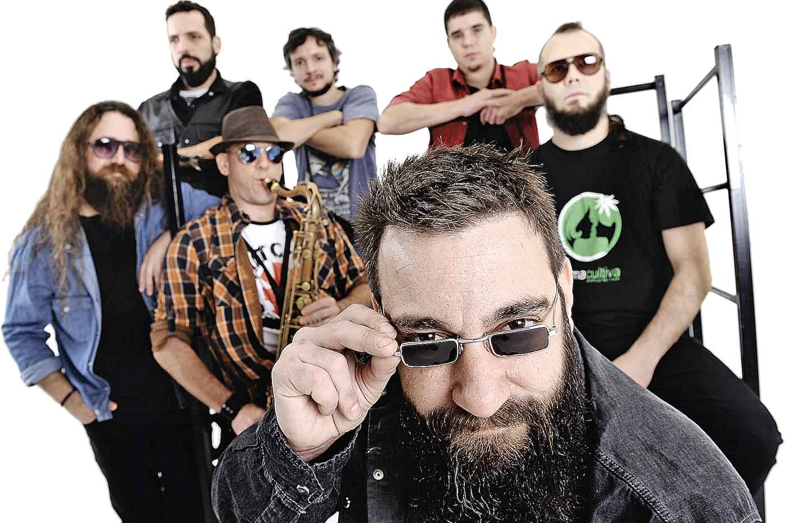

Las pastillas del abuelo
Somos una banda dedicada al rock nacional
Su sonido se caracteriza por continuar la línea de lo que se llamó, en los años 90, el "rock barrial", agregándole, al igual que otras bandas de la época, elementos procedentes de la murga y otras expresiones de la música popular.
Biografia
La banda se inició en el 2002. La fama del grupo comenzó con el demo "El Sensei". una canción con letra de tinte humorístico sobre un joven a quien en el barrio llaman sensei por sus distintas "habilidades" a la hora de armar y fumar un cigarrillo de marihuana.
La canción no fue incluida en ninguno de sus discos pero, en formato de demo acústico, sonó mucho y con mucho éxito en un espacio radiofónico ("El Bombardeo del Demo" del programa "Day Tripper" de la Rock & Pop), que les permitía a las bandas under darse a conocer. Como consecuencia de esto la banda llegó a ser conocida antes de publicar su primer material discográfico. Se trata de una situación especial, al punto de que al momento de dar su primer recital importante, el 31 de mayo de 2002, ya se hizo presente un grupo de seguidores con banderas e identificados por un nombre "de hinchada", y desplegando todo el comportamiento típico de los grupos de seguidores fieles de las bandas de rock barrial. La inusual circunstancia de que una banda sin material discográfico y casi sin haber tocado en vivo pueda generar este tipo de seguimiento se ha intentado explicar diciendo que "La 20", como se llama el club de fans, habría estado inicialmente compuesto por compañeros de colegio de los integrantes de la banda,2 de la Escuela Normal Mariano Acosta, un establecimiento público y con alumnado de clase media.
Discografia
| titulo | Fecha de publicacion | discografica |
|---|---|---|
| Por colectora | 2005 | 007 record |
| las pastillas del abuelo | 2006 | Crack discos |
| Acustico | 2007 | Crack discos |
| Crisis | 2008 | Crack discos |
| Desafios | 2011 | Crack discos |
| Paradojas | 2015 | Crack discos |
Contratar
laspastillasdelabuelo@gmail.com
Redes sociales
Las pastillas del abuelo (facebook)
_lpda (instragram)